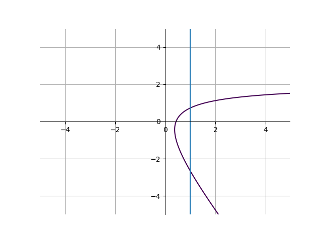

Algebra
Functions and Graphing
Let’s begin by going over what a function is. At its simplest level, a function will take in a number, apply some operation to it, and output another number. Let’s go over notation first.
Functions are denoted by \(f(x) = \text{Some function}\). (Note that it doesn’t have to be \(f(x)\), it could be \(g(x)\), \(h(x)\), or any other letter. However, it’s usually \(f\)). Some example of functions are:
\[f(x) = x^3+2\]
\[g(x) = \frac{2}{x}-3\]
\[h(x) = \sqrt{x}\]
The input here is the \(x\) in parentheses after the \(f\), \(g\), and \(h\). When inputting a number into the x value, we substitute every x inside the function for that number. For example:
\[f(x) = x^3+2\]
\[f(5) = 5^3+2\]
\[f(5) = 127\]
\[g(x) = \frac{2}{x}-3\]
\[g(0.5) = \frac{2}{0.5}-3 = 1\]
That’s how we write functions algebraically. We can also visualize them using tables. Consider the following table for the function \(f(x) = 3x+1\):
| \(x\) |
\(f(x)\)
|
| -2 |
-5 |
| -1 |
-2 |
| 0 |
1 |
| 1 |
4 |
| 2 |
7 |
Or, we can use graphs. Functions on graphs are very useful and common. This is the graph for the same function \(f(x) = 3x+1\):

On the x-axis (big horizontal line), lies the value of an x value (an input to the function). On the y-axis (big vertical line), lies the corresponding f(x) value. For example, 3 units to the right of the origin (the origin is where the two axes cross), the y value is 10, because \(f(3) = 10\).
An important note about functions: when inputting a number into a function, the function should always return either 1 or 0 numbers. In other words, inputting a number into a function can never give 2 (or more) results. For example, the following graph is not a function:

because at \(x=1\), there are two y values. You can use something called the vertical line test to test if an equation on a graph is actually a function. If you can make at least 1 vertical line on the graph that crosses the equation at least twice, then the equation automatically not a function.
Feel free to play with functions as you want here: